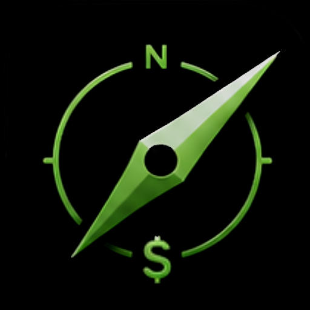
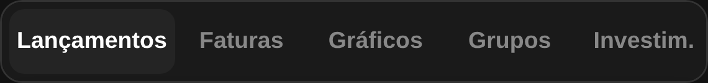
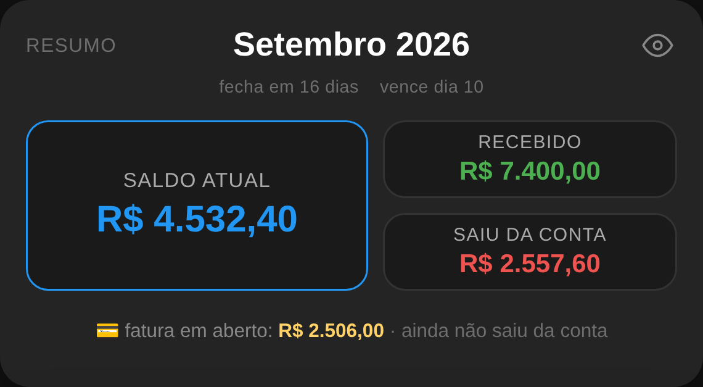
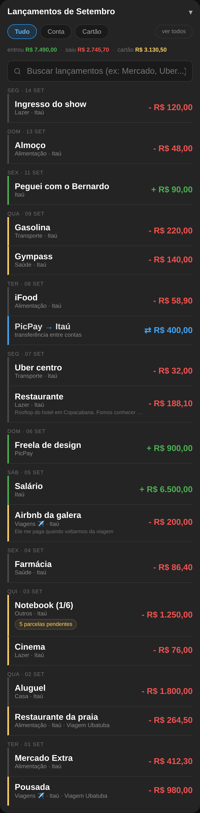
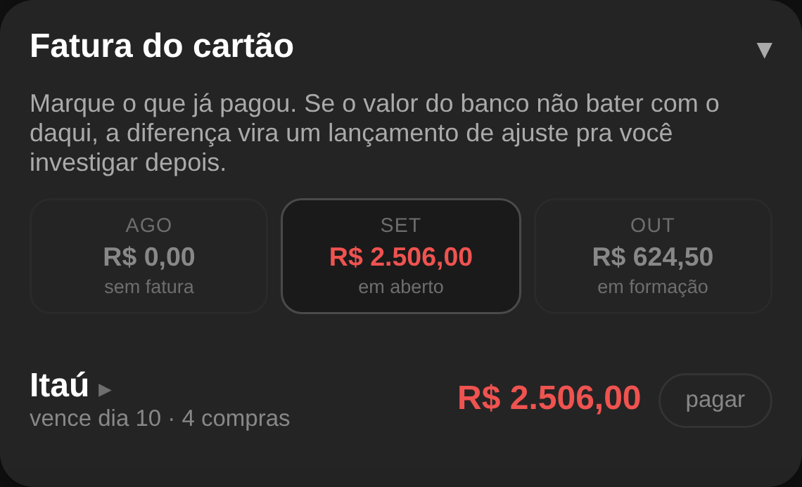
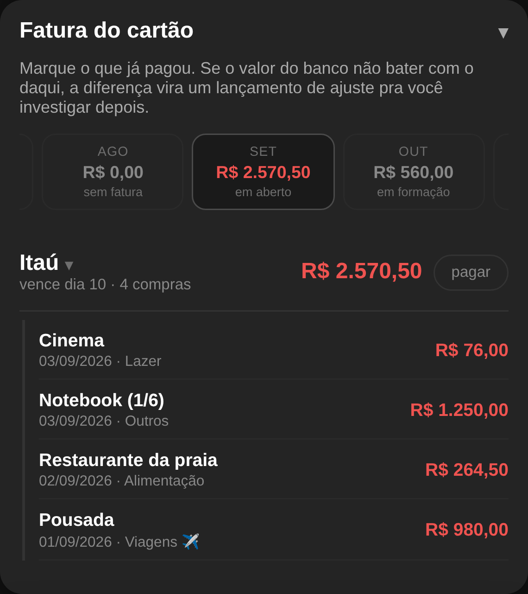
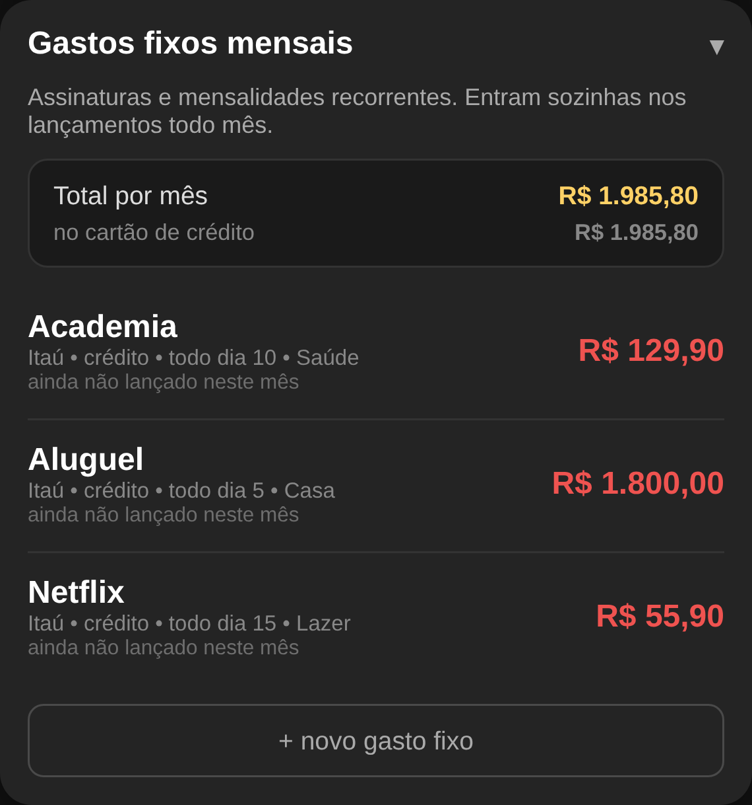
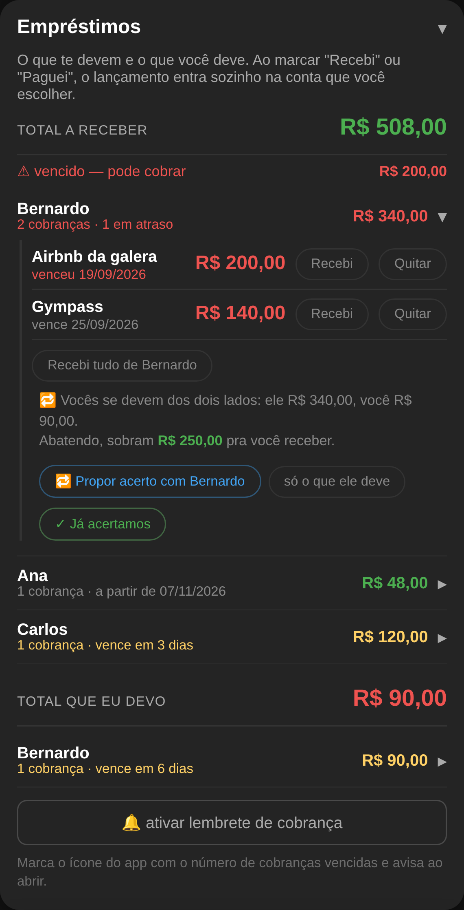
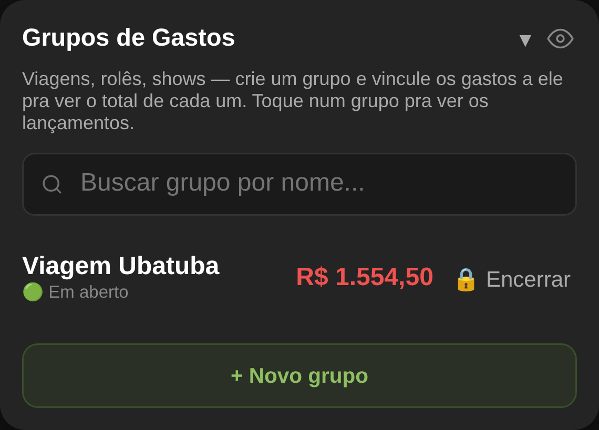

Controle de gastos que funciona no seu celular, sem conta pra criar, sem internet e sem ninguém vendo seus dados.
Três coisas que mudam a forma de usar.
⋮ → Adicionar à tela inicial.
Assim ele vira um ícone como qualquer outro app, abre em tela cheia e funciona offline.
Deslize o dedo para os lados para trocar de aba.

| Aba | Para que serve |
|---|---|
| Lançamentos | Registrar o que entrou e o que saiu. É onde você passa 90% do tempo. |
| Faturas | O painel do mês: saldo, cartão, gastos fixos, empréstimos. |
| Gráficos | Para onde o dinheiro foi, por categoria, com metas. |
| Grupos | Juntar gastos de uma viagem ou evento e ver o total fechado. |
| Investim. | Anotar aplicações e acompanhar o patrimônio. |
| Ajustes | Contas, categorias, ordem dos cards, sons e backup. |
Descrição, valor, e pronto. O resto o app preenche sozinho.
Ainda na aba Lançamentos, logo abaixo do formulário.
Digite ou fale. Funciona com perguntas do dia a dia:
Dá para incluir o período em qualquer uma: hoje, esta semana, em julho, neste ano, desde o início.
Tem também os botões prontos, que respondem o que é mais difícil de perguntar:
Com o card fechado, a própria linha do título já mostra o gasto do mês, o ritmo e o que tem a receber.
É isso que faz o número do app bater com o extrato do banco.
Comprar no crédito não tira dinheiro da sua conta no dia da compra. Vira fatura. O dinheiro só sai quando você paga a fatura. O app segue exatamente essa lógica:
| Você lançou como | O que acontece com o saldo |
|---|---|
| À vista / Débito ou dinheiro, Pix | Sai da conta na hora, pela data da compra. |
| Crédito à vista Crédito parcelado | Não mexe no saldo. Entra na fatura do cartão e só sai quando a fatura for paga. |

Toque em Saldo do mês para abrir o detalhamento:
A cor da barra diz se o dinheiro já saiu da conta.
Cada linha tem uma barrinha na borda esquerda que responde a única pergunta que importa depois da regra acima: esse dinheiro passou pela conta?
| Barra | Significa |
|---|---|
| Cinza | Saiu da conta — débito, dinheiro ou Pix. |
| Amarelo | Está no cartão. Ainda não saiu. |
| Verde | Entrou na conta. |
| Azul | Só mudou de conta (transferência). |

No topo da lista, Tudo · Conta · Cartão, com o subtotal do que está na tela:
O passo que fecha a conta do mês.

Quando o banco cobrar a fatura, marque aqui e digite o valor real que você pagou — não o que o app calculou.
Depois de marcada como paga, aquele valor entra em Saiu da conta e o saldo do mês se acerta.
No topo do card ficam a fatura anterior, a atual e a próxima em formação — com o quanto já está indo pra ela. Toque em qualquer uma pra pular direto pro mês dela.
Toque no nome do cartão e a fatura abre, listando as compras que formam aquele valor, com data e categoria. É o extrato do mês, do lado de cá.

Aluguel, streaming, academia — o que se repete todo mês.

Cadastre uma vez e o app mostra, mês a mês, o que já foi lançado e o que ainda não foi. O total por mês e quanto disso cai no cartão ficam no topo do card — útil para saber o piso do seu custo de vida.
Quem te deve, quanto, desde quando — e como cobrar sem constrangimento.
Ao lançar um gasto, marque “Emprestei para alguém” e diga o nome. Ele aparece aqui agrupado por pessoa, com um sinal de trânsito:
| Cor | Significa |
|---|---|
| Verde | No prazo. Não precisa fazer nada. |
| Amarelo | Está chegando o vencimento. Vale um lembrete. |
| Vermelho | Já venceu. Pode cobrar. |

Toque no nome da pessoa para abrir o que ela deve. Lá dentro aparece o botão de mensagem, e o texto muda conforme a cor:
Na primeira cobrança de cada pessoa o app pede o WhatsApp dela — dá para escolher da agenda do celular ou digitar. Depois disso, vai direto.
Os botões −1 mês / +1 mês adiam o prazo de uma cobrança. Só que adiar joga a data pro futuro, e a linha sairia do vermelho sem ninguém ter pago. Por isso o app conta:
Junto com o telefone você escolhe o tom daquela pessoa: 😂 Zoeira, 💛 Carinhoso ou 😐 Neutro. O texto muda conforme o tom, a situação e o mês — a mesma pessoa não recebe a mesma frase duas vezes seguidas.
Quer ser avisado sem precisar abrir? Toque em “ativar lembrete de cobrança” e escolha a antecedência (1 semana, 3 dias, 1 dia, no dia). O ícone do app passa a mostrar quantas cobranças estão vencidas.
Passar dinheiro do PicPay para o Itaú não é gasto nem receita.
Use o botão ⇄ no topo da aba Lançamentos. O app pede confirmação, mostra a transferência
na lista em azul e ajusta o saldo de cada conta — mas não conta como
despesa nem receita, porque o dinheiro continua sendo seu.
É o que você faz antes de pagar a fatura, quando precisa juntar o valor numa conta só.
Para onde o dinheiro foi, e se você está dentro do combinado.
Escolha o período na primeira linha. O olho ao lado esconde todos os valores — útil para mostrar a tela para alguém sem expor seus números.
O card Gasto por dia da semana alterna entre barras e colunas — em colunas dá pra ver os sete dias lado a lado e sacar de bate-pronto qual pesa mais.
Em Metas você define um teto mensal por categoria. A meta acompanha o período escolhido: R$ 100 por mês vira R$ 1.200 quando você olha o ano inteiro.
Quanto custou a viagem inteira, no fim das contas.

Crie um grupo (“Viagem Ubatuba”, “Aniversário”, “Reforma”) e marque os gastos que pertencem a ele na hora de lançar. O app soma tudo, mostra por categoria e permite fechar o grupo quando acabar.
Funciona junto com os empréstimos: se você pagou a pousada e vai dividir depois, marque as duas coisas.
Onde você deixa o app com a sua cara.
| Quando | O que fazer |
|---|---|
| Na hora do gasto | Lance na hora, pelo microfone se estiver com pressa. O que fica para depois não é lançado. |
| Toda semana | Abra a aba Faturas e confira o saldo. Olhe as cores dos empréstimos. |
| Quando a fatura vier | Marque como paga com o valor real do banco e investigue o ajuste, se houver. |
| Uma vez por mês | Passe pelos Gráficos para ver as categorias, e exporte o backup. |
Lancei errado, e agora? Toque no lançamento na lista e escolha editar ou excluir.
Comprei parcelado, preciso lançar todo mês? Não. Lance uma vez com o total e o número de parcelas.
O saldo não bate com o banco. Quase sempre é forma de pagamento trocada: um gasto no crédito lançado como débito (ou o contrário). Confira em Saldo do mês.
Troquei de celular. Instale o app, vá em Ajustes → Backup → Importar e escolha o arquivo que você exportou.
Vou mostrar a tela para alguém. Toque no ícone de olho para esconder todos os valores.